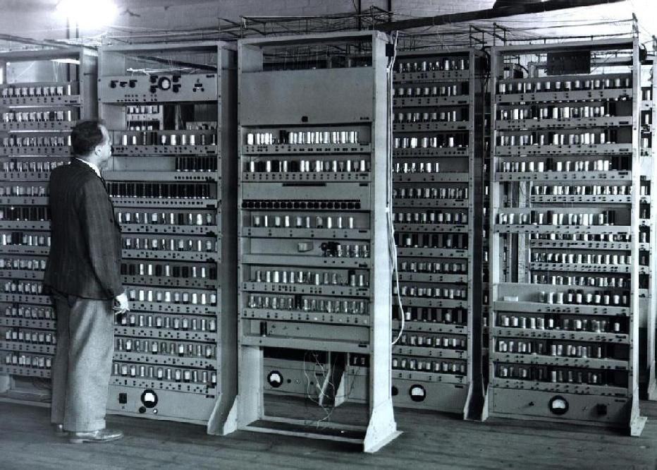

Электронно-вычислительная машина — комплекс технических, аппаратных и программных средств,
предназначенных для автоматической обработки информации, вычислений, автоматического управления.
При этом основные функциональные элементы (логические, запоминающие, индикационные и др.)
выполнены на электронных элементах.
Поколения ЭВМ
Навигация
1 Поколение

Элементная база: электронно-вакуумные лампы.
Соединение элементов: навесной монтаж проводами.
Габариты: ЭВМ выполнена в виде громадных шкафов.Эти компьютеры были огромными, неудобными и слишком
дорогими машинами,
которые могли приобрести крупные корпорации и правительства.
Лампы потребляли большое количество электроэнергии и выделяли много тепла.
Быстродействие: 10−20 тыс. операций в секунду.
Эксплуатация: сложная из-за частого выхода из строя электронно-вакуумных ламп.
Программирование: машинные коды. При этом надо знать все команды машины, двоичное представление,
архитектуру ЭВМ.
В основном были заняты математики-программисты.
Обслуживание ЭВМ требовало от персонала высокого профессионализма.
Оперативная память: до 2 Кбайт.
Данные вводились и выводились с помощью перфокарт, перфолент.
Элементной базой являются сверхбольшие интегральные схемы (СБИС) с использованием оптоэлектронных
принципов (лазеры, голография).
В компьютерах пятого поколения произойдет качественный переход от обработки данных к обработке знаний,
создание экспертных систем.
Архитектура будет содержать два блока: Традиционный компьютер интеллектуальный интерфейс,
задача которого понять текст, написанный на естественном языке и содержащий условие задачи,
и перевести его в работающую программу для компьютера.